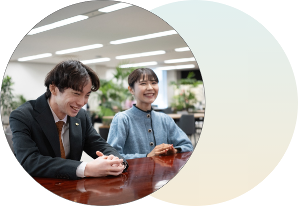
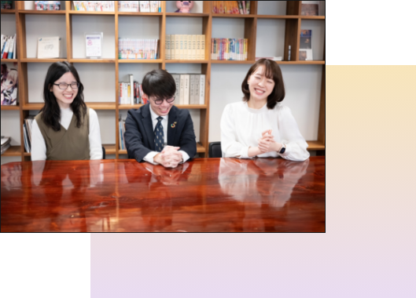
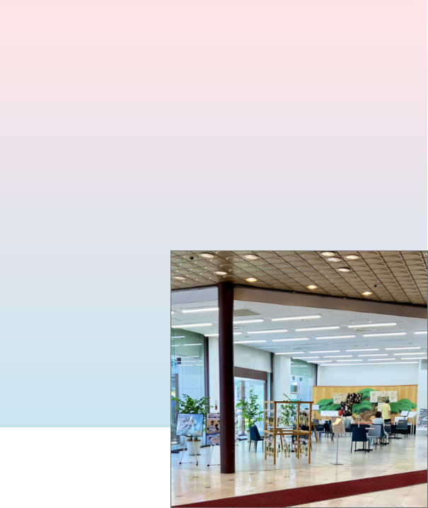
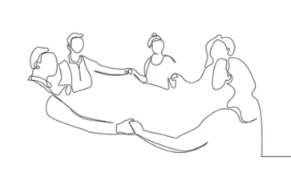
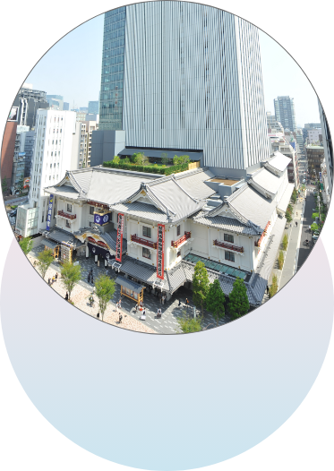

Q&A
松竹をもっと知るための
15のQ&A
JOB
仕事について
1.
松竹の仕事は、
伝統文化に
関することが多いですか？
ミッションの1つに「日本文化の伝統を継承、発展させ、世界文化に貢献する。」とあるように、伝統文化に関わる事業も大切にしていますが、映画、演劇、不動産、イベントなど幅広い事業展開をしています。ゲームなど新規領域への進出や新たなコンテンツの開発にも力を入れており、さまざまなキャリアの可能性があります。
2.
映画や演劇、
アニメに詳しくないと
松竹では働けないですか？
そんなことは全くありません！実際に、年に一度しか映画館に行かない人や歌舞伎を一度も観たことない人も採用されています。知識は入社後にいくらでも身に付けていくことができます。ご安心ください。しかし、志望本部や部署、志望業務に関わる作品はご覧になった方が会社理解に繋がると思います。

3.
映画や演劇、歌舞伎の
プロデューサーには、
すぐなれますか？
初期配属からプロデューサー職に就くことはほぼありません。お客様周りの業務や宣伝、営業、マーケティングなどを通して知識を蓄え、経験を積んでから配属されるケースが多いです。実績として、入社3年目でプロデューサー職に配属された社員がおりますが、配属年次はさまざまです。
4.
エンタメ業界って
やっぱりブラックで
忙しいですか？
もちろん部署によって繁忙期はありますが、社員のワークライフバランスを大切にしており、無理なく働ける環境づくりを行っています。具体的な取り組みとしては、22時オフィス完全消灯や長時間労働アラートメールなどがあります。チームで業務を分担し、忙しい時期も協力して乗り切っています。
5.
お笑い芸人のマネージャーや
映画の技術スタッフとして
働いている社員はいますか？
松竹株式会社ではマネージャーや技術スタッフのポジションはありません。松竹芸能や松竹ショウビズスタジオといったグループ会社での採用をご検討ください。松竹においては、イベント企画や映画製作など、別の形で希望される分野に関わることは可能です。
PEOPLE
人について
6.
働いている人から見て、
松竹の社風ってどうですか？
社員同士のコミュニケーションが盛んで、上司・役員との距離が近く、気軽に相談ができる風土だと思います。積極的に若手に仕事を任せる環境もあり、新しいことへの挑戦を促し、失敗は糧として成長させてくれる社風があります。また、自由に参加できる部活やサークルもあり、部署の垣根を超えた交流が多いことも特徴です。
7.
どんな大学や学部出身の人が
多いですか？
文系出身の社員が多いですが、音楽大学や芸術大学、大学院や理系学部、体育・スポーツ系学部などさまざまな経歴を持った社員がおります。また、新卒採用において学歴フィルターは一切ございません。
8.
海外の大学に通っていた人や
外国籍の人はいますか？
どちらの社員もおります。海外の大学に短期や長期で留学していた社員もいれば、海外の大学を卒業した社員もいます。また、日本のアニメやコンテンツが好きで単身日本に渡り、松竹に入社をした外国籍の社員も在籍しています。
9.
松竹社員の
特徴はありますか？
感度高く時代の流れを読み取り、日々さまざまなコンテンツにアンテナを張っている人が多い印象です。社会人になるとどうしてもインプットよりもアウトプットの時間が長くなりますが、自己啓発支援や会社主催セミナー、社外派遣などの制度を活用し、学び続けながら働いている社員が多いです。

10.
障がいのある人は
働いていますか？
毎年障がい者採用を行っており、社員のなかにも障がいを持ちながら働いている人が多くいます。障がいや病気を持ちながらでも働きやすい環境づくりの一環として、看護師資格を持った社員の常駐や週に1度の産業医による診察を行っています。また、社内に医務室を設けています。

RECRUIT
選考・内定について
11.
どこに配属されるか
分からないので不安です。
配属はどう決まりますか？
内定後に本人の希望と適性を鑑みた上で、配属を決定しています。その後は入社後4年間適用されるジョブローテーション制度や年に1度提出していただくキャリアプランシートを通して、会社と一緒にキャリアを考えていきます。また、エントリーシートがみなさんからいただく最初の配属希望となっています。
12.
どうしてジョブローテーション制度を
導入しているのですか？

松竹という会社全体を知っていただくとともに、複数の業務経験を通してご自身の適性や志望を見極めていただきたいと考えているからです。また、複数部署の経験で得た多角的な視点と、異なる分野に従事する社内外の人との交流を通して、新しいビジネスモデルやアイデア、イノベーションの創出を期待しています。

13.
より松竹を知るために、
OBOG訪問はできますか？
もちろん可能です。しかしながら、公平性および個人情報保護の観点から人事部による社員紹介は行っておりません。直接連絡をお取りください。また、インターンシップやセミナーなどで現場社員が登壇する機会もありますので、ぜひそのような場で松竹社員の雰囲気を感じてもらえるとうれしいです。
14.
内定者のインターンシップ参加率は
高いですか？
高い年もあれば、低い年もあります。内定者のなかにはインターンシップ参加者もいれば、不合格だった人もいます。なかには、松竹でインターンシップを行っていたことを知らなかった内定者も…
15.
松竹の内定者研修や新入社員研修は
どんなことをするのですか？
2ヶ月に1度の内定者研修と入社後2ヶ月間の新入社員研修を実施しています。映画宣伝ワークなど実務に即した企画ワークや講義、先輩社員座談会を通して松竹やエンタメビジネスへの理解を深めていただくとともに、社会人としての基本的なビジネススキルを身につけていただきます。※今後変更になる可能性もあります